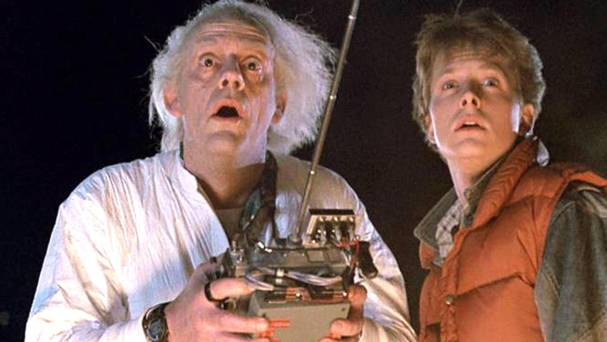
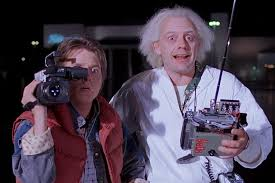
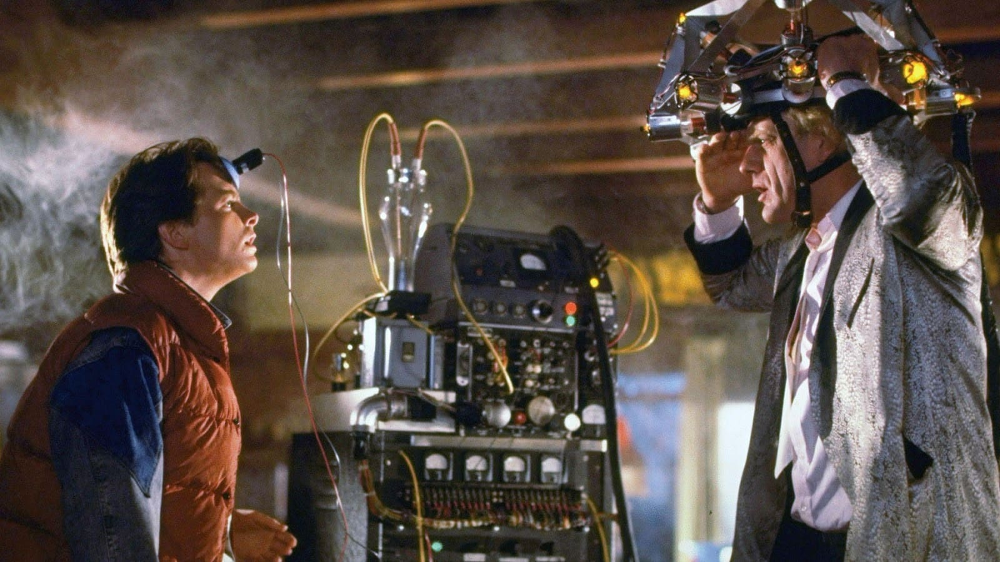
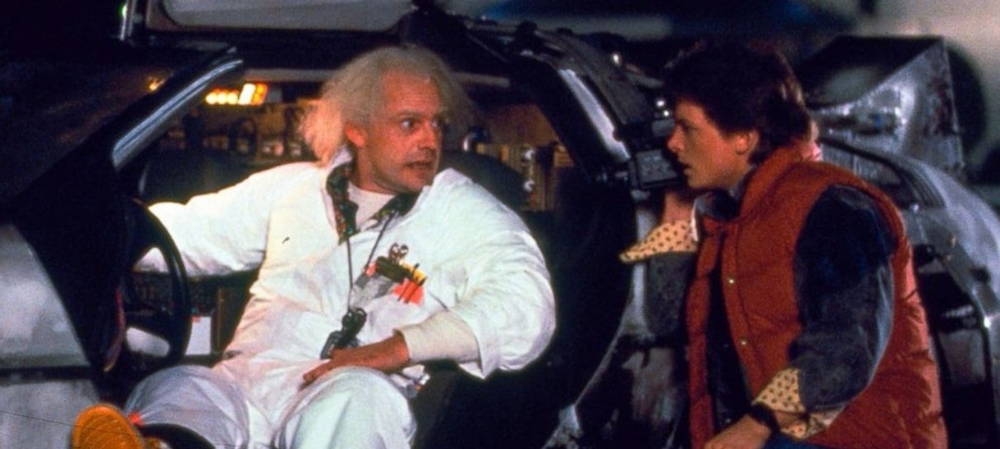

Eu esperava uma suprema bomba da ficção científica e acabei encontrando uma ótima quase-comédia romântica com viagem no tempo que eu facilmente assistiria numa sessão da tarde. E isso é um problema? Nem um pouco.

Eu genuinamente não sabia o que esperar quando finalmente fui assistir esse clássico. Desde o momento em que o Marty McFly chega ao passado e começa a encontrar versões mais jovens de pessoas que ele já conhecia, o filme consegue transformar situações simples em momentos extremamente divertidos. E claro, ele interfere muito mais do que deveria.



O mais impressionante é como o filme faz a viagem no tempo parecer leve e natural. A todo momento as duas grandes metas do passado estão sendo trabalhadas, enquanto as cenas envolvendo os pais do Marty entregam quantidades absurdas de vergonha alheia — tanto nas situações românticas quanto nas familiares. Tem algo quase “cringe” em vários desses momentos, mas de um jeito extremamente carismático. E, considerando o quanto os pais fazem o espectador sofrer de vergonha, era inevitável que o filho também entregasse sua própria dose disso no show final.
“De Volta para o Futuro transforma paradoxos temporais em puro entretenimento de sessão da tarde.”
O filme é muito bem montado em praticamente tudo o que propõe. O máximo de negatividade que eu conseguiria
apontar seriam alguns efeitos especiais, mas cara… 1985. Pra época, tudo funciona muito bem até hoje. E, como todo clássico filme de
sessão da tarde, existe aquela evolução pessoal acompanhada de uma lição de moral simples, mas eficiente.
Claro, não sem antes deixar um gancho completamente escancarado para a continuação.
No fim, De volta para o futuro é exatamente o tipo de viagem no tempo que vale o seu tempo.
✔ O QUE É BOM
- Marty e Brown possuem uma química extremamente divertida.
- A viagem no tempo é simples de entender e muito bem utilizada.
- Humor, vergonha alheia e aventura funcionam juntos o tempo inteiro.
Discussão e Opiniões